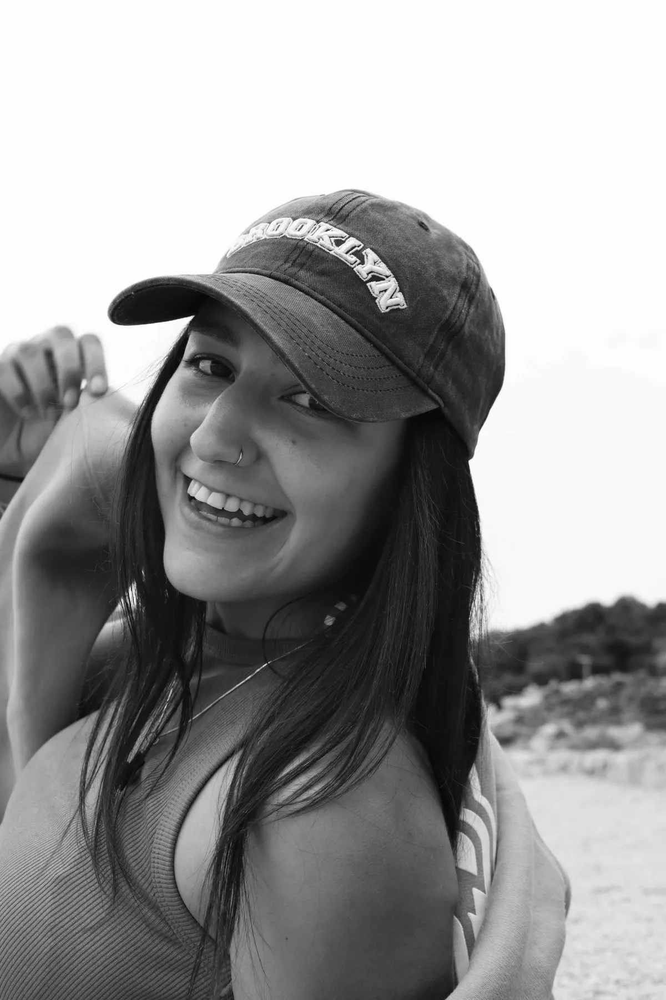

Ja sam Lucija Babić, završila sam studij informatike na Fakultetu informatike i digitalnih tehnologija u Rijeci.
Moj put u tehnologiju počeo je iz kombinacije kreativnosti i znatiželje. Oduvijek me privlačilo kako se ideje mogu pretvoriti u stvarne projekte kroz dizajn i kod — i taj proces me i danas pokreće.
Tijekom studija radila sam na raznim digitalnim projektima, od web i mobilnih aplikacija do grafike i animacija. Kroz to sam otkrila da se najbolje osjećam u front-endu i dizajnu.
Uživam raditi s HTML-om, CSS-om, JavaScriptom, Reactom, Figmom i Canvom, spajajući funkcionalnost s čistim i privlačnim vizualima.
Izvan tehnologije najčešće sam iza svog Canon fotoaparata ili DJI drona, snimajući kadrove koje kasnije koristim u projektima.
Moj cilj je pomagati ljudima i brendovima da svoje ideje pretvore u jasna, funkcionalna i vizualno smislena digitalna iskustva.

Godina Rođenja: 2002
Lokacija: Rijeka, Hrvatska
Organizacija: Ricky Wallace
Grad: Rijeka, Hrvatska
Trenutno
Organizacija: Algebra Bernays
Grad: Rijeka, Hrvatska
Trenutno
Fakultet informatike i digitalnih tehnologija
Grad: Rijeka, Hrvatska
2025
Organizacija: Meta Brains
Grad: Rijeka, Hrvatska
2024
Poslodavac: Login d.o.o.
Grad: Rijeka, Hrvatska
2025
Kreirala i uređivala web sadržaje unutar WordPress CMS-a. Aktivno doprinosila optimizaciji stranica prema SEO smjernicama i prilagodbi sadržaja za bolju čitljivost.
Poslodavac: Oniria Studios
Grad: Zaragoza, Španjolska
2025
Sudjelovala u kreiranju vizualnih materijala u Canvi i web dizajn koncepta u Figmi. Doprinijela razvoju vizualnog identiteta brenda i stjecala praktično iskustvo u digitalnom dizajnu i timskom radu.
Poslodavac: HARTA d.o.o.
Grad: Matulji, Hrvatska
2023.-2025.
Upravljanje web stranice u WordPress CMS-u i društvenim mrežama. Održavala funkcionalnost stranica, optimizirala proizvode i sadržaj, te kreirala vizualne materijale i online kampanje za bolju vidljivost brenda.
Engleski
Španjolski
Talijanski
Fotografija
Digitalni Dizajn
Putovanja
Sport & Fitness
Slikanje & Crtanje
Glazba